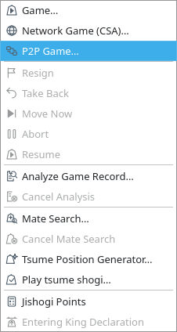
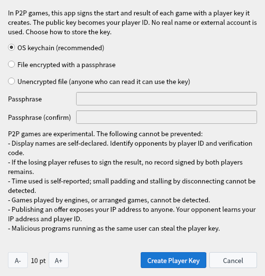
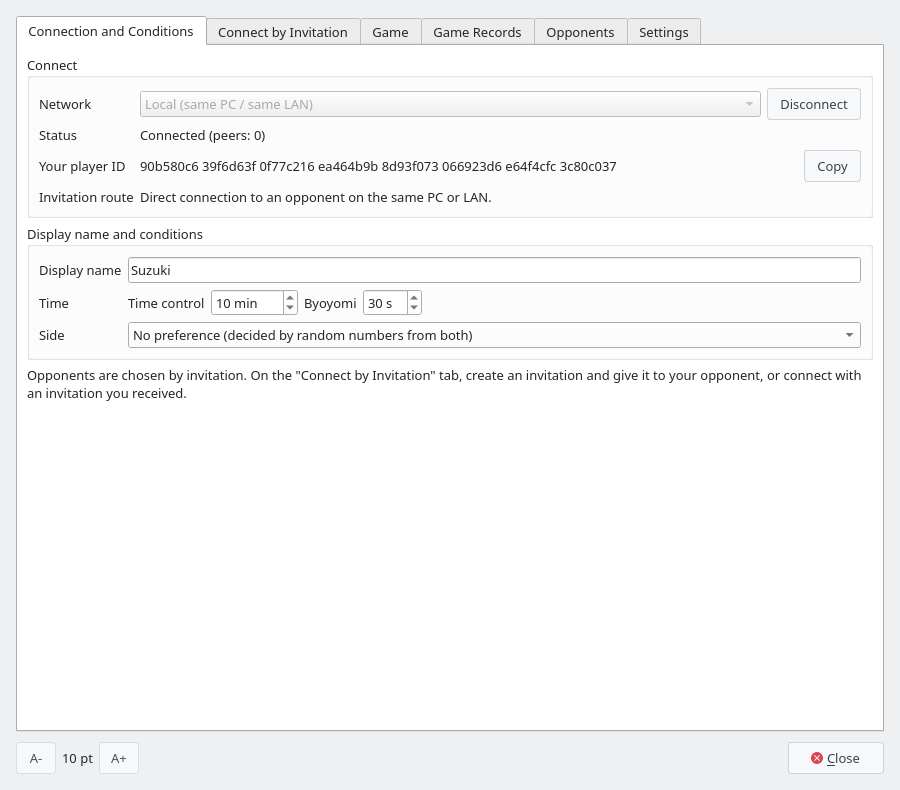
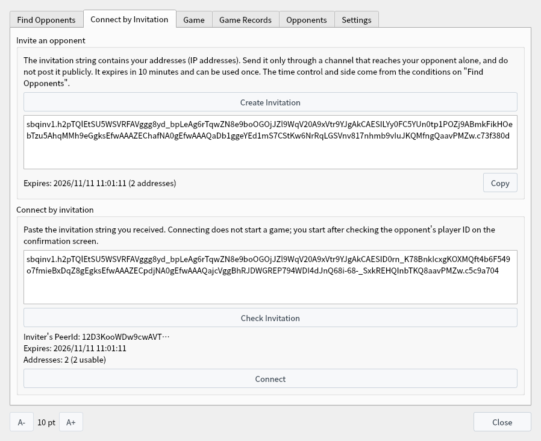
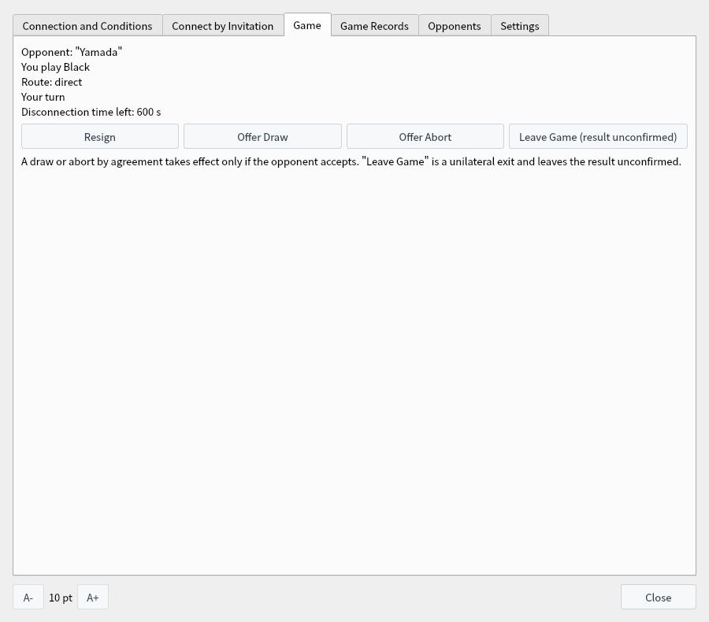
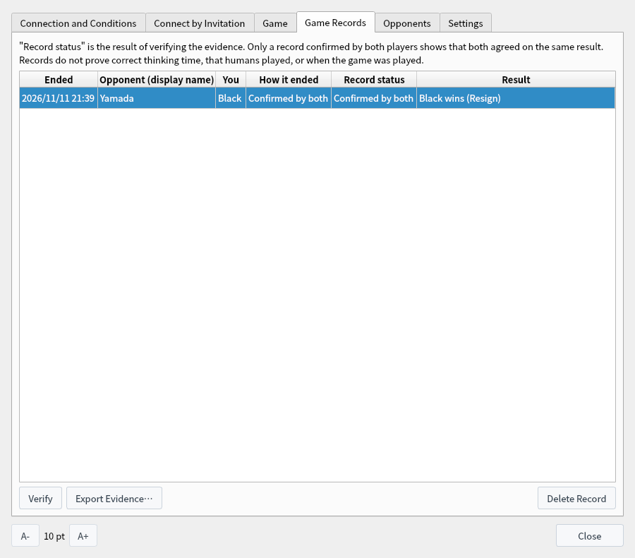
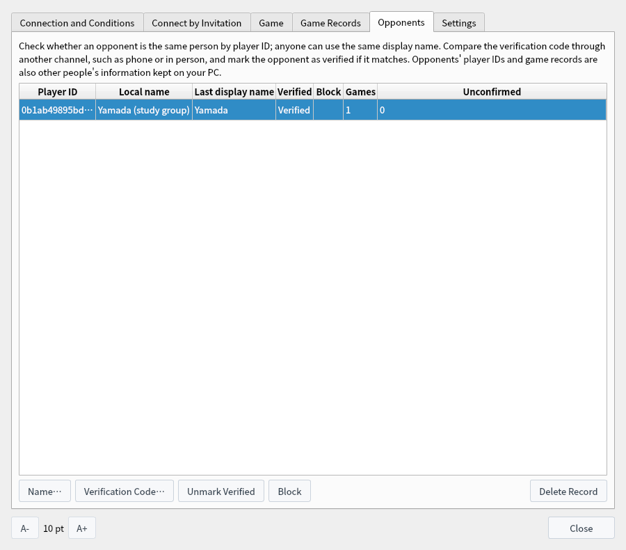
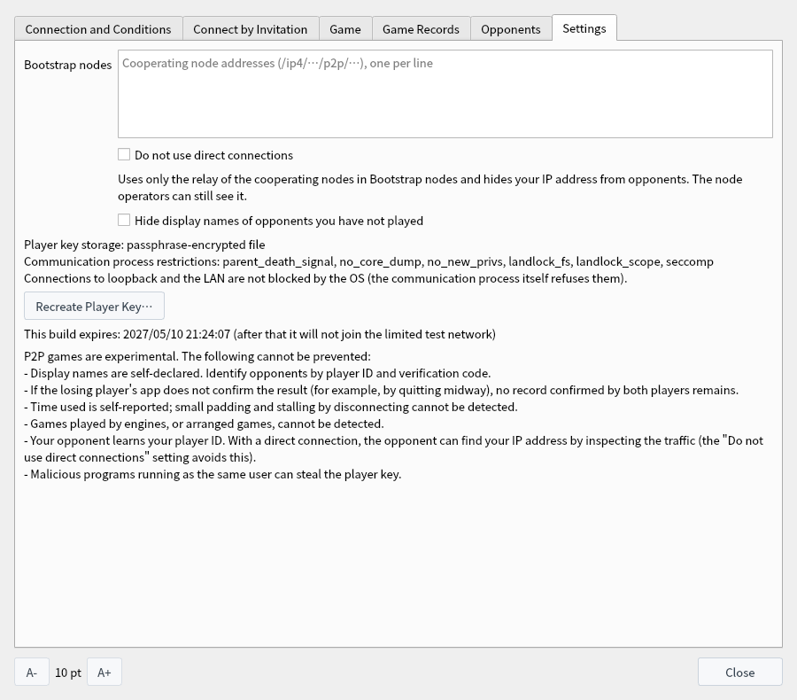
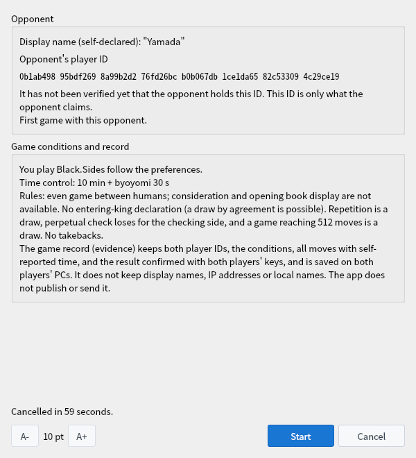
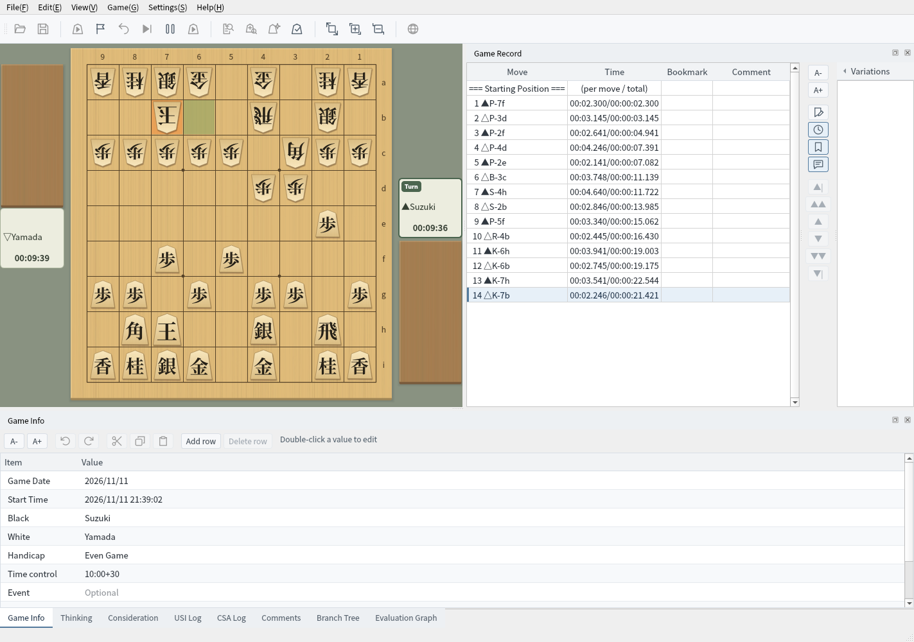

P2P Games (Experimental)
Connect directly to your opponent without a game server, and keep a game record whose start and result both players confirmed
This is an experimental feature; screens and rules may change. Screenshots were captured on Linux with the English interface.
What Are P2P Games?
An experimental way to play that is available only in ShogiBoardQ built with P2P games enabled
In a P2P game, your app and your opponent's app connect directly instead of going through a game server as in CSA network play (when a direct connection is not possible, the traffic goes through the relay of a cooperating node, but the node does not become a game server; see 2). You choose your opponent by sending an invitation. It is meant for playing people you know; there is no public list for finding strangers.
The start and the result of each game are confirmed automatically by both players' apps with a player key that this app creates (no action is needed). The public key of the player key is your player ID. No real name or external account is used. When the game ends, a game record (evidence) confirmed by both players is saved on both PCs, and anyone can verify it.
When a direct connection is not possible, the traffic travels from your app through the cooperating node to your opponent's app. The path looks like going through the server in CSA network play, but the cooperating node only passes along traffic that stays encrypted. Even through a relay, the other side of your game is your opponent's app, and both apps check the moves and confirm the result.
| Item | Game server (CSA network play) | Cooperating node (when relaying) |
|---|---|---|
| Whether a move is legal | The server judges it | Does not judge it. Each app checks it |
| Time control | The server measures the time | Does not measure it. Each app reports its own time used, and the other app checks it against the time it measured |
| Result and game end | The server decides and announces it | Does not decide it. Both apps determine it from the game record and confirm it with their player keys |
| Game record | The server can keep a copy | Does not keep one. It is saved only by the two apps |
| Contents of the traffic | The server receives each move and sends it on to the opponent | Cannot read them. Moves, player IDs and display names stay encrypted between the two apps |
| Pairing | The server pairs the players | Does not pair players. Your opponent is decided by invitation |
The operator of the cooperating node can see IP addresses and which IP addresses connected to each other (What Opponents and the Network Can See). The node can stop or delay the traffic it relays, but cannot alter it (altered traffic fails the encryption check, and the apps reject it). If the traffic stops, it is handled the same way as a dropped connection (When the Connection Drops).
Even after connecting through a relay, the two apps try to switch to a direct connection. Once they switch, the traffic no longer goes through the cooperating node, and Route on the Game tab changes to direct. If either player uses Do not use direct connections, the apps do not switch, and the whole game goes through the relay.
A P2P game is a one-on-one game between two players, and one app can have only one game at a time. This is the same with or without a cooperating node. A cooperating node only checks reachability and relays traffic; it does not pair players or let one app play several games.
| Case | Without a cooperating node | With a cooperating node |
|---|---|---|
| You invite seven people | You can play only one game at a time. You play whoever connects first, and the others are refused with "The opponent is busy negotiating or playing with someone else." To play all seven, give the next person a new invitation after each game and play them one by one. | The same as without a cooperating node: only one game at a time. |
| Eight people play four games at once | In each of the four pairs, one player creates an invitation and sends it to the other. Within the same LAN, each pair connects separately, so all four games can be played at once (even one PC can run up to eight copies of the app). | In each of the four pairs, one player invites the other. All four pairs can use the same cooperating node (one cooperating node relays for up to 128 people at a time). |
Up to four invitations can be valid at the same time, so if you create seven, the first three stop working. There is no feature for pairing invited players with each other (such as running a tournament), and no way to watch games. For the invitation rules, see How Many People You Can Invite, and How Often.
P2P games are an experimental feature and are not included in the distributed ShogiBoardQ. To use them, pass -DENABLE_P2P_PLAY=ON to CMake when you build from source (libsodium and Rust are required; see Linux Build and Release for the build steps).
- Operating system: Linux only for now. P2P games are not available where the OS cannot restrict the communication process (shogiboardq-peer).
- Networks: Local test (same PC / same LAN) and Limited test. For which to use, see Two Ways to Play.
- Cooperating node: Games over the Internet (Limited test) need one cooperating node as the first peer to connect to (Playing with a Cooperating Node). Games on the same PC or LAN do not need one (Playing Without a Cooperating Node).
- Expiry: 180 days after the build date, the build no longer joins the limited test network. The local test network and reviewing or verifying saved records keep working.
- Automation API: P2P games are not available when the app is started with
--automation.
| Item | Rule |
|---|---|
| Handicap and players | Even games only, between humans. Consideration, mate search, game analysis, and the opening book display are unavailable during a game. |
| Time control | Main time (minutes) and byoyomi (seconds). Each player reports their own time, which is checked against the time the opponent measured. |
| Sides | Assigned as the inviter prefers; with No preference, decided by random numbers from both players. |
| Game end | Resignation, checkmate, time loss, repetition (draw), perpetual check (the checking side loses), 512 moves reached (draw), draw by agreement, and abort by agreement. |
| Not available | Takebacks and entering-king declarations (an entering-king game can end in a draw by agreement). |
Two Ways to Play
Where your opponent is decides whether you need a cooperating node. Each way is explained step by step on its own page
Playing Without a Cooperating Node
Play an opponent on the same PC or LAN, connected with just an invitation. You need neither a cooperating node nor any change on the Settings tab. How many people you can invite and the firewall settings are also on this page.
Learn more →Playing with a Cooperating Node
Play an opponent on the Internet through a cooperating node. Who runs the cooperating node, how to run it, and how to hide your IP address from your opponent are also on this page.
Learn more →| Item | Without a cooperating node | With a cooperating node |
|---|---|---|
| Who you can play | Opponents on the same PC or LAN | Opponents on the Internet (another home, another connection) |
| Network | Local test (same PC / same LAN) | Limited test |
| Cooperating node | Not needed | One is needed (someone runs it, and both players enter its address) |
| Settings tab | No changes needed | Enter the cooperating node in Bootstrap nodes |
| Addresses in the invitation | This PC's address on the LAN (such as 192.168.…) | Addresses that go through the cooperating node (and, if your PC can be reached directly from outside, your IP address on the Internet) |
| Address the opponent can see | Only your address on the LAN | With a direct connection, your IP address on the Internet (Do not use direct connections hides it) |
| Expiry | None | 180 days after the build |
The two networks do not connect to each other. Both players choose the same network and connect.
Setting up the player key and display name, exchanging invitations, the confirmation screen, the controls while playing, and game records and verification are the same either way. This page explains them.
Getting Ready
Open the P2P window, create a player key, and connect to a network
Choose P2P Game (Experimental)… from the Game menu in the menu bar to open the P2P window. You can keep using the board and the game record while the window is open.


Game menu: P2P Game (Experimental)… opens the window
On the Connection and Conditions tab, choose a Network and click Connect. The first time, Prepare P2P Games opens. Read the list of what cannot be prevented, choose how to store the key, and click Create Player Key.
- OS keychain (recommended): Stores the key in the OS keychain (KWallet, GNOME Keyring, and so on). Not available in builds without QtKeychain.
- File encrypted with a passphrase: Stores the key in a file encrypted with a key derived from your passphrase. You are asked for the passphrase the first time you connect after starting the app.
- Unencrypted file: Anyone who can read or copy the files on this PC can play while impersonating you.
The key files are kept in ~/.local/share/ShogiBoardQ/p2p/identity.


Prepare P2P Games, shown the first time you connect
Once connected, Status shows Connected (peers: N) and Your player ID appears. Enter the name your opponents will see in Display name. It must be 1 to 32 characters with no leading or trailing spaces, using letters, digits, symbols, kana, kanji, and full-width alphanumerics.
Time control, Byoyomi, and Side become the conditions of the games you invite people to. Invitation route shows how an invited opponent can reach you (directly, or through the relay of a cooperating node). Your IP address and your opponent's are never shown on screen.
The Tabs of the Window
The six tabs of the P2P window, what each item means, and when to use the items on the Settings tab
The P2P window has six tabs. Use the two on the left until you have an opponent, the Game tab once the game starts, and Game Records and Opponents after it ends.
| Tab | When you use it |
|---|---|
| Connection and Conditions | Connect to a network, and set the display name shown to opponents and the time control and side used when you invite. |
| Connect by Invitation | Create an invitation to send to your opponent, or connect with an invitation you received. |
| Game | See the state of the game, resign, or offer a draw or an abort. |
| Game Records | See the records (evidence) of finished games, and verify, export, or delete them. |
| Opponents | Name the opponents you have played, check them with a verification code, and block them. |
| Settings | Addresses of cooperating nodes, the setting that hides your IP address from opponents, and recreating the player key. None of them is needed for games on the same PC or LAN. |
A- and A+ at the bottom change the text size (it is remembered the next time you open the window). Clicking Close closes the window, but the connection and the game continue. To open it again, choose Game → P2P Game (Experimental)…; to disconnect, click Disconnect on the Connection and Conditions tab.
Connect to a network under Connect at the top, and under Display name and conditions set the name shown to opponents and the conditions of the games you invite people to.


The Connection and Conditions tab: after connecting
| Item | Description |
|---|---|
| Network | The network to join. Local test (same PC / same LAN) connects to opponents on the same PC and the same LAN; Limited test connects to opponents on the internet (it needs a cooperating node). It cannot be changed while connected. |
| Connect / Disconnect | Connects to the selected network. The first time, the screen for creating a player key opens. Once connected, the button becomes Disconnect, which cancels your valid invitations and disconnects. It cannot be clicked while conditions are being confirmed or during a game. |
| Status | Shows Disconnected, Connecting…, or Connected (peers: N). N is the number of peers you are connected to now (cooperating nodes and your opponent). If the communication process could not be started, it shows P2P games are not available. |
| Your player ID | The public key of your player key (64 hexadecimal digits); it is how opponents tell you apart. Click Copy to copy it. Before a key is created it shows (not created yet). |
| Invitation route | While connected, shows how an invited opponent will reach you (directly, or through the relay of a cooperating node). If nothing can reach you from outside yet, it says so. IP addresses are not shown. |
| Display name | The name shown to opponents (1 to 32 characters). It appears on the confirmation screen, in the game information, and on the opponent's Game Records tab, but it is not kept in the evidence. |
| Time | The Time control (0 to 1440 minutes) and Byoyomi (0 to 600 seconds) of the games you invite people to. They cannot both be 0. |
| Side | The side you prefer in the games you invite people to: No preference (decided by random numbers from both), Prefer Black, or Prefer White. |
The time control and the side come from the inviter's conditions. The invited player checks them on the confirmation screen before starting.
Invite an opponent at the top is for the inviter, and Connect by invitation at the bottom is for the invited player. Both work only while connected. For the steps, see Playing Without a Cooperating Node and Playing with a Cooperating Node.


Connect by Invitation tab: create an invitation (top) and connect with one you received (bottom)
| Item | Description |
|---|---|
| Create Invitation | Creates an invitation and shows it in the box below. Under the box are the expiry time and the number of addresses the opponent can use. An invitation expires in 10 minutes and can be used once. Up to four can be valid at the same time (How many people you can invite). |
| Copy | Copies the invitation. Send it in a way that reaches only your opponent. |
| Connect by invitation (box) | Paste the invitation you received here. |
| Check Invitation | Reads the pasted invitation and shows the inviter's PeerId (the beginning of it), the expiry time, and the number of addresses below. |
| Allow connecting to the private addresses above (opponent on the same LAN) | Appears only on Limited test when the invitation contains private addresses (addresses inside the same LAN). Check it if you allow connecting to them. |
| Connect | Connects to the inviter of the checked invitation. When the connection is made, the confirmation screen opens for both players. Connecting alone does not start a game. |
The window switches to this tab when a game starts. You move on the board in the main window; this tab shows the state of the game and lets you resign or make an offer. When no game is being played it shows No game in progress.


Game tab
| Shown | Meaning |
|---|---|
| Opponent | The opponent's display name. |
| You play Black / You play White | Your side in this game. |
| Route | direct means you are connected directly to the opponent; relay means the connection goes through the relay of a cooperating node. |
| Your turn / Opponent's turn | Whose turn it is. It shows Waiting for move confirmation… while the opponent's app checks your move, Reconnecting (N s left) when the connection is lost, and Confirming the result… while the result is being compared after the game ends. |
| Disconnection time left | How much longer the connection may be lost in this game (it counts down from 600 seconds). At 0 the game is interrupted. |
| Result | Once the result is confirmed, it is shown like Black wins (Resign). |
- Resign: Available only on your turn. After a confirmation, you lose the game.
- Offer Draw / Offer Abort: Asks the opponent whether they accept. It takes effect only if they accept.
- Leave Game (result unconfirmed): Leaves the game unilaterally. The result is not confirmed.
Finished games are listed one per row. Select a row and click a button below. For the meaning of the statuses and what verification checks, see Game Records and Verification.


Game Records tab: a record confirmed by both players
| Column or button | Description |
|---|---|
| Ended | When the game ended. |
| Opponent (display name) | The display name the opponent used. If you named them on the Opponents tab, the local name is shown too. |
| You | Your side (Black or White). |
| How it ended | How the game ended in your app (Confirmed by both, Without opponent's confirmation, Interrupted (unconfirmed), Communication lost (unconfirmed), and so on). |
| Record status | The result of verifying the evidence (Confirmed by both, Determined by the moves, or Unconfirmed). If the evidence is damaged it shows Verification failed or Unreadable. |
| Result | The winner and how the game ended, like Black wins (Resign). |
| Verify | Verifies the selected record and shows whether the confirmations by the player keys are correct, whether the moves follow the rules, and so on. |
| Export Evidence… | Saves the evidence file (.sbqmatch) wherever you like. The evidence contains both players' IDs. |
| Delete Record | Deletes the evidence and the record of the selected game (this cannot be undone). |
The opponents you have played are listed one per row by player ID. Anyone can use the same display name, so use the player ID to tell whether it is the same person. Select a row and click a button below.


Opponents tab: an opponent with a local name, verified with the verification code
| Column or button | Description |
|---|---|
| Player ID | The opponent's player ID. Use this value to tell whether it is the same person. |
| Local name | The name you gave with Name…. It is not shown to the opponent or written into game records. |
| Last display name | The display name the opponent used in the most recent game. |
| Verified | Shows Verified for opponents you checked with a verification code and marked with Mark Verified. |
| Block | Shows Blocked for opponents you have blocked. |
| Games / Unconfirmed | The number of games with that opponent, and how many of them ended without a confirmed result. |
| Name… | Gives the opponent a local name. It appears on the confirmation screen and on the Game Records tab. |
| Verification Code… | Shows a 30-digit number made from both player IDs. Compare it with your opponent through another channel, such as a phone call or in person. |
| Mark Verified / Unmark Verified | Marks an opponent whose verification code matched as verified. Click again to remove the mark. |
| Block / Unblock | Refuses that opponent even if they connect with an invitation. They are told you are busy negotiating or playing with someone else. Click again to unblock. |
| Delete Record | Removes the opponent's name, verified mark, block, and game count. |
Anyone can create a new player key for free, so a block or past results can be avoided by recreating the key.
If you only play on the same PC or LAN, you do not need to change anything on this tab. Bootstrap nodes and Do not use direct connections are for playing over the Internet (Playing with a Cooperating Node). Hide display names of opponents you have not played, the player key and the expiry are explained in steps 8 and 9 below.
The box and the checkboxes are saved when you change them. Bootstrap nodes and Do not use direct connections take effect the next time you connect (if you are connected, disconnect and connect again).


Settings tab
| Item | Description |
|---|---|
| Bootstrap nodes | Addresses of cooperating nodes (/ip4/…/p2p/…), one per line, up to 16. If you only use Local test, you can leave it empty (to arrange one, see Who Runs the Cooperating Node?). |
| Do not use direct connections | Uses only the relay of the cooperating nodes in Bootstrap nodes, so opponents cannot see your IP address. The node operators can still see it (Play Without Showing Your IP Address). |
| Hide display names of opponents you have not played | Shows Name hidden instead of the display names of new opponents on the confirmation screen and on the Game Records tab. |
| Player key storage | How the current player key is stored (OS keychain, a passphrase-encrypted file, or an unencrypted file). While connected, the restrictions placed on the communication process are shown too. |
| Recreate Player Key… | Creates a new player key. Your player ID changes, so opponents see you as someone else. The old key is deleted. Disconnect before clicking it. |
| This build expires | After this date, the build does not join the Limited test network. |
At the bottom is the list of what P2P games cannot prevent (What Cannot Be Prevented and What Others See).
A display name is a name the opponent chooses freely. Anyone who sees an invitation can use it within its 10-minute lifetime, so if an invitation is seen by others, a stranger may connect to you. A stranger's display name may contain offensive words or text that looks like a message from the app.
With this setting, the display name of an opponent you have not played (one not listed on the Opponents tab) is shown as "Display name: hidden" on the confirmation screen and as Name hidden on the Game Records tab. Check the opponent by the player ID and "First game with this opponent.", and click Cancel if you do not recognize them.
- The display names of opponents you have played (listed on the Opponents tab) are still shown. An opponent whose record you deleted with Delete Record on the Opponents tab is treated as one you have not played again.
- Once a game starts, the opponent's display name appears in the player names on the board, in the game information, and on the Game tab. This setting lets you cancel before starting without seeing a stranger's name.
- If you play only with people you know, you can leave it unchanged. It works on both networks.
Player key storage only shows how the current key is stored and, while connected, the restrictions placed on the communication process (Landlock, seccomp, and so on). You cannot change them here.
Use Recreate Player Key… in cases like these.
- When someone else may have learned your key file or passphrase (whoever has the key can play as you)
- When you want to change how the key is stored (you choose the storage again when recreating it)
- When you want to play with a new player ID that is not linked to your past games
Recreating the key changes your player ID, so on your opponents' Opponents tab you appear as someone else (a new opponent). Your verification codes change too, so ask opponents who had marked you as verified to compare the code again. The old key is deleted and you cannot go back to the old player ID. Your past game records (evidence) are not deleted and keep the old player ID. Disconnect on the Connection and Conditions tab before clicking it.
This build expires shows the date 180 days after the build date. P2P games have no server that can stop old versions. So that old versions with unfixed bugs or security flaws do not stay on the Internet network, an expired build does not join Limited test. After it expires, build a new version. Local test games and reviewing and verifying saved records still work after the expiry.
The Confirmation Screen
Check your opponent and the conditions before the game starts
When someone connects with an invitation, Confirm P2P Game Conditions opens for both players. Opponent shows the opponent's display name (self-declared) and the full player ID. Use the player ID, not the display name, to tell whether it is the same person.
| Message | Meaning |
|---|---|
| It has not been verified yet that the opponent holds this ID. This ID is only what the opponent claims. | The start procedure is still in progress. The player ID is only what the opponent has claimed. |
| Verified that the opponent holds the key of this ID. | The opponent's app confirmed the start with the key of this ID. |
| Verified opponent (checked with the verification code). | You marked this opponent as verified on the Opponents tab. Your local name for them is also shown. |
| First game with this opponent. / Games with this opponent: N | How many games you have played with them, and how many of those had no confirmed result. |
| Same display name as the opponent you named "…", but a different player ID. | Shown in red. This may be someone other than the opponent you named. |
Game conditions and record shows the sides and how they were decided, the time control, the rules, and what the game record keeps. If everything is fine, click Start. The game begins when both players have clicked Start. Clicking Cancel, or not starting within 60 seconds, cancels it (the seconds left are shown at the bottom).


Confirmation screen (before the opponent is verified)
During the Game
Move on the main window's board, and resign or make offers on the Game tab
When the game starts, the board, game record, and clocks of the main window are used. Game Info shows both display names and the game ID. When you play White, the board flips automatically so that you see it from your side.
Your move is placed on the board after your opponent's app has received and checked it (Waiting for move confirmation… is shown meanwhile). There are no takebacks.


Main window during a game (after move 14)
The Game tab shows the opponent, your side, the route (direct or relay), whose turn it is, and the disconnection time left.
- Resign: Available on your turn.
- Offer Draw / Offer Abort: Asks your opponent whether to accept. Only if they accept does the game end in a draw or abort by agreement. If they decline, the game continues.
- Leave Game (result unconfirmed): Leaves the game unilaterally. The result is not confirmed, and your opponent is told the game was interrupted.
When the game ends by resignation, checkmate, time loss, and so on, both apps compare the result (winner, how it ended, and the move number) and, if they match, confirm it automatically with the player keys. No action is needed (Confirming the result… is shown on the Game tab meanwhile). When both confirmations are in, the record becomes Confirmed by both. If the opponent's confirmation does not arrive within 30 seconds, it is saved as Without opponent's confirmation.
If the connection drops, the app reconnects automatically (Reconnecting (N s left) is shown). The clock of the side to move keeps running, and the side to move can still make one move, which is sent when the connection returns.
If the connection cannot be restored within 120 seconds, the game ends as Communication lost (unconfirmed). It is also interrupted when the total disconnection time in one game exceeds 10 minutes. A failure on your own line cannot be told apart from a deliberate disconnection, so a disconnection is not treated as a loss for the opponent.
If the app or the communication process exits, or the PC goes to sleep, the game cannot be resumed (the result is unconfirmed).
Game Records and Verification
The record (evidence) of each finished game stays on both PCs, and anyone can verify it
Finished games are listed on the Game Records tab. How it ended is how the game ended in your app; Record status is the result of verifying the evidence.
| Record status | Meaning |
|---|---|
| Confirmed by both | Both player keys confirmed the same result. This is the only status that shows that both players agreed on the result. |
| Determined by the moves | The result was not confirmed by both, but the moves up to the last position both apps checked determine checkmate, repetition, perpetual check, or 512 moves reached. |
| Unconfirmed | Neither of the above, for example when the opponent's confirmation did not arrive after a resignation or time loss, or when the game was interrupted. |
Evidence is saved in ~/.local/share/ShogiBoardQ/p2p/evidence. If the app exits during a game, the record up to that point appears as an unconfirmed record the next time you open the window.
Click Verify to see whether the confirmations with player keys are valid, whether the moves follow the rules, whether the self-reported time arithmetic matches, whether the result is determined by the moves, and the record status. Export Evidence… saves the evidence file (.sbqmatch) wherever you like. Delete Record removes the evidence from your PC (this cannot be undone).
A record does not prove the actual thinking time, that humans played, or when the game was played.
You can also verify an evidence file without starting the GUI by using verify-match of shogiboardq-cli. The result is JSON (the example below is formatted and long IDs are shortened).
$ shogiboardq-cli verify-match --input-path ~/game.sbqmatch
{
"black_player_id": "4b8788e2…",
"byoyomi_ms": 30000,
"category": "mutually_signed",
"checks": {
"clock_arithmetic": true,
"conditions_match": true,
"record_legal": true,
"result_conflicts_with_record": false,
"result_refers_to_record": true,
"signatures": true,
"start_signatures": true
},
"game_id": "c62a566e…",
"last_confirmed_ply": 15,
"main_time_ms": 600000,
"network": "sbq-local-1",
"network_id": "83cc9dfd…",
"not_verifiable": [
"actual_thinking_time",
"human_play",
"date_played"
],
"ok": true,
"result": {
"black_signed": true,
"cause": "resign",
"outcome": "black_wins",
"ply": 15,
"result_digest": "a6cec2cd…",
"white_signed": true
},
"states": 16,
"valid": true,
"white_player_id": "8a3569db…"
}valid is true when the confirmations with player keys and the record structure are correct, and category is the record status (mutually_signed is Confirmed by both, determined_by_record is Determined by the moves, and unconfirmed is Unconfirmed). not_verifiable lists what this record cannot show (actual thinking time, human play, and the date played).
What Cannot Be Prevented and What Others See
Please read this before using the experimental P2P games
- Display names: Display names are self-declared. Identify opponents by player ID and verification code.
- Confirming the result: If the losing player's app does not confirm the result (for example, by quitting the app or cutting the connection midway, or by using a modified app), no record confirmed by both players remains.
- Time used: Time used is self-reported. Padding of up to 10 seconds per move and stalling by disconnecting (up to 10 minutes in total per game) cannot be detected.
- Engines and arranged games: Games played by engines and arranged games cannot be detected. Both players can also agree to confirm a made-up result.
- Player key: Malicious programs running as the same user can steal the player key.
Do not use recorded wins as the basis for an official rating or playing strength.
| Who | What they can see |
|---|---|
| Your opponent | Your player ID, display name, and conditions. With a direct connection, they can also find your IP address by inspecting the traffic (it is not shown on screen). With Do not use direct connections, they cannot |
| Anyone who sees the invitation | The addresses for reaching the inviter (including the IP address when direct connections are used. On “Local test (same PC / same LAN)”, all of this PC's LAN addresses are included, also those of VPNs and virtual devices) |
| The operator of the cooperating node | IP addresses and which IP addresses connected to each other. The reachability check only asks the node to test the address it saw; your LAN addresses are not sent. Not the moves, player IDs, or display names |
| Devices on the same LAN | While you are connected on “Local test (same PC / same LAN)”, that this PC is running P2P play (anyone who connects to the listening port can tell). Without the invitation, they see neither this PC's list of addresses nor the game |
| Anyone who receives the game record (evidence) | Both player IDs, the conditions, the approximate date and time the game started, all moves with self-reported time, and the result confirmed by both. Display names, IP addresses, and local names are not kept |
The app never publishes your game records or sends them anywhere.